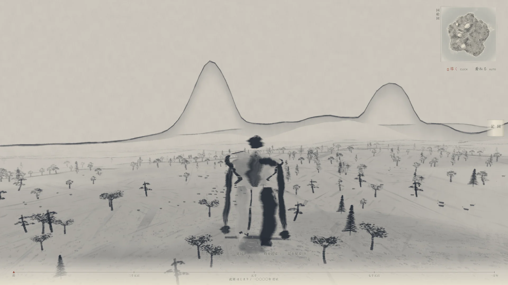
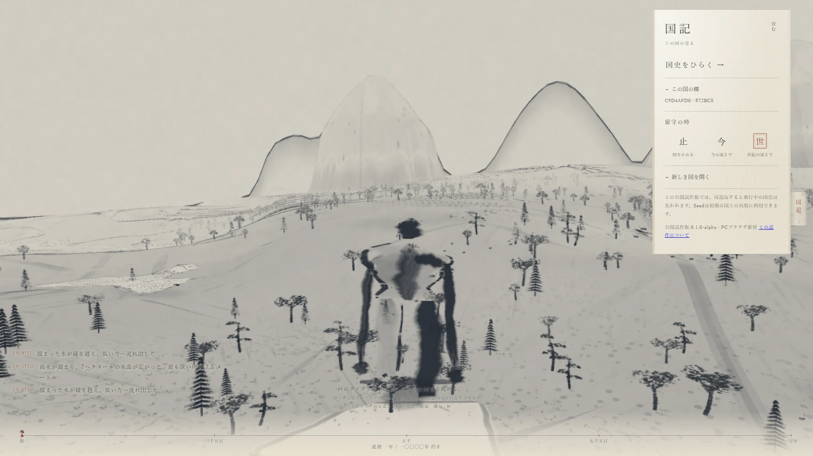
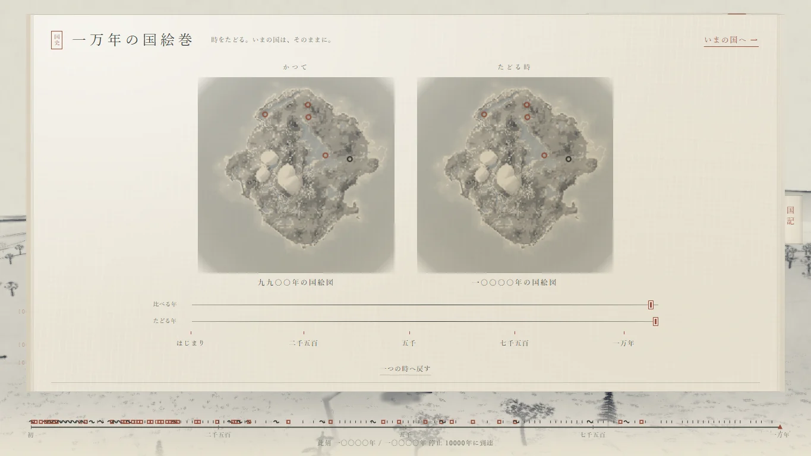
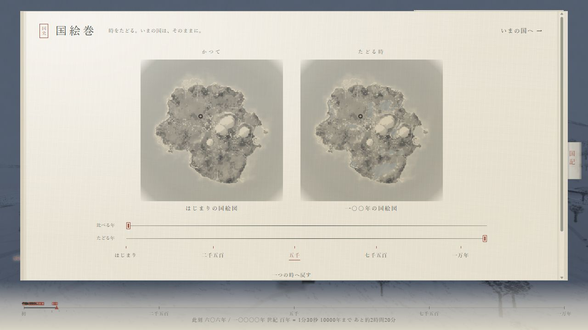

JINN PROJECT / WORK
国創
Daidarabotchi
One Daidarabotchi.
Ten thousand years of land.
Show him only where to go.
He and the world decide the rest.
Public prototype / Version 0.1.0-alpha

A vast body, simply living.
Walking. Sitting. Sleeping.
A hand on the earth. Water in his palms.
He does not think, “I will make a mountain” or “I will make a lake.” His enormous body simply touches the world. The ground sinks, soil is pushed outward, and water flows. What remains may later be called a mountain or a lake.
The land bears the traces of his life.
The land itself changes.
Peaks, basins, rivers, lakes, coastline, and vegetation change with time and the giant’s actions. He does more than walk across a finished map. The map itself is always in the middle of its history.

People begin to make a home.
Water, land, safety, and familiarity guide people toward places to live. You do not place them. Small people also read the changing world and live within it.
Watching. Pointing. Gathering. Scattering. Fleeing.
Keeping their distance, returning, and inspecting a new place.
They never know the whole giant.
They know what they saw, the traces they found, and what someone told them. They cannot read the world’s truth or its complete history directly.
One event does not become
the same memory for everyone.
An event acquires another meaning.
Something happens in a place and remains in someone’s memory. Someone tells it; another person interprets it and finds a symbol. Repeated ways of living may become customs or rituals.
- Event
- Memory
- Story
- Interpretation
- Symbol
- Custom
- Ritual
- An imagined presence
- Name
- Myth
This is not a guaranteed path to myth. Some forms emerge in one world; others break off or are forgotten.
Thousands of years later,
an ordinary act of the body may be told as another story.
Then, read ten thousand years.
The Historical Atlas records a map every hundred years, from year 0 to year 10000. Follow its timeline to read changes in mountains, rivers, lakes, coastlines, human gathering places, and historical events.

Set the beginning beside a later age.
Place two ages side by side to compare the land and the places people gathered. The current world is not rewound: you are reading the maps it left behind.
Even the ages you did not see.
Depending on your settings, history can continue while you are away. When you return, the record of your absence lets you revisit those unseen ages in the scroll.

Record its beginning.
A new world begins with a different island and history each time. Specify a Seed to reproduce the same initial world. This does not save the history that follows.
About the work
- World
- A browser-based world simulation using Three.js, procedural terrain and hydrology, dynamic geography, long-term history, human memory and lore layers, reproducible initial seeds, and the Historical Atlas.
- Human reactions
- Public Alpha uses deterministic rules. The design permits a replacement external Decision Provider; the published version does not use AI to control inhabitants in real time.
- Music
- Sixty tracks generated by the creator using Suno v5.5 under a paid plan permitting public and commercial use.
This is a public prototype. Progress and Atlas records disappear on reload. A desktop browser is recommended; mobile support is not officially guaranteed.
Begin a land’s history.
Show him a destination, or let him choose.
One living creature, and ten thousand years of its land.